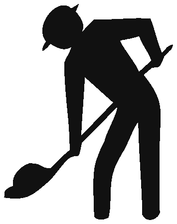

Extraje la silueta del obrero directamente del letrero de referencia (sin el rombo ni el borde). Esa silueta exacta se usa ahora en el formato "Cinta de obra · Bloque horizontal" que le gustó. Las variantes a continuación cambian solo el color de fondo del recuadro de la izquierda donde va la figura.

Esta silueta sólida es exactamente la que aparece en el letrero PI-2 ("Trabajos en la Vía") chileno, recortada del fondo. Es la imagen base que va dentro del recuadro de la izquierda en cada variante.
Confírmeme el número de variante (01 naranjo, 02 amarillo, 03 blanco). Aplico la elección en todo el sitio: cabecera, hero, footer, OpenGraph, README y favicons (`favicon.ico` + `favicon.svg` + `apple-touch-icon.png`).